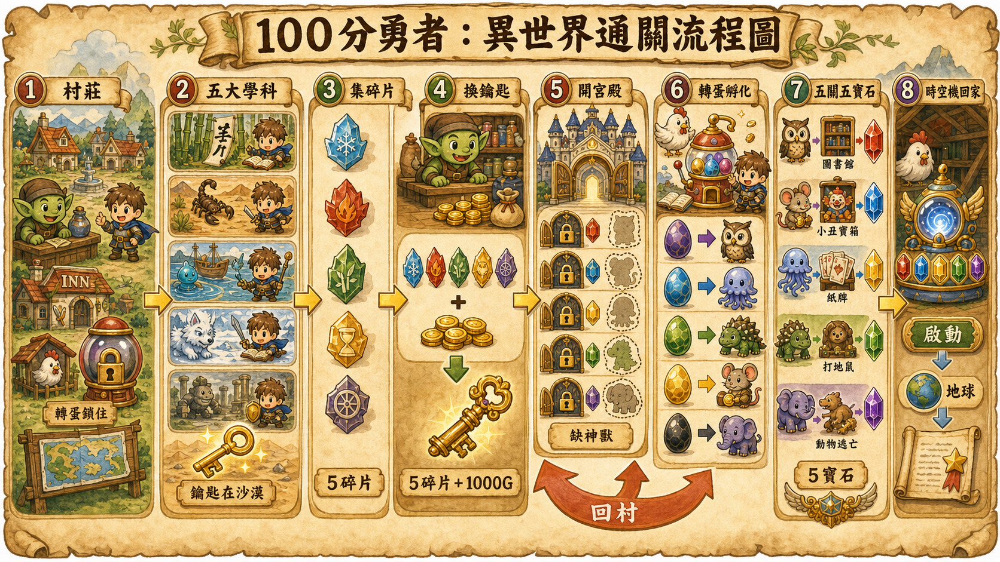
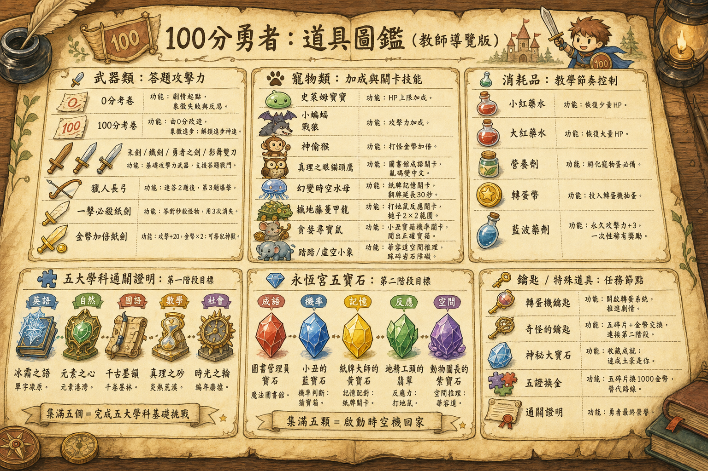

🌟 課程簡報
AI 程式
＋ 動態題庫
這場課程主要教 AI 寫程式與動態題庫的運用方式 · 4 小時
按 → 或 空白 開始
先來舉個手 ✋
今天以前
只用過 AI 聊天視窗的
請舉手
再舉一次 ✋
今天以前
用過 Antigravity 的
請舉手
最後一個 ✋
今天以前
用 AI 寫出過程式的
請舉手
CHAPTER 1
LLM 是大腦
IDE 是手腳 🧠✋
LLM 只是「大腦」
LLM = Large Language Model（大型語言模型）
Claude · GPT · Gemini · 都是
✅ 它會做的事
❌ 它不會做的事
就像一個沒有手的顧問——
可以教你怎麼做，但摸不到你的滑鼠 🖱
IDE 就是給大腦的「手腳」
IDE = 給 AI 大腦的一副身體
開檔 · 改檔 · 存檔
執行程式 · 跑指令
讀檔案 · 看截圖
邊做邊回報進度
同一句話，差別在有沒有手腳
| 情境 | 只有大腦 🧠 | 有手腳 🤖 |
|---|---|---|
| 做營業稅試算頁 | 給你一坨程式碼 你自己貼、存、開 |
建檔、寫好 打開瀏覽器 |
| 整理 30 張發票 | 教你 Python 語法 你還是不會弄 |
讀檔 重新命名 + 分類 |
| 讀 CSV 找異常 | 要你 把 1000 筆貼到對話框 |
自動分析 寫一份報告檔給你 |
章節 1 · 結論
LLM（大腦）＋ IDE（手腳）
＝ AI 真的幫你做完事 ✨
章節 1 · 現場示範
Antigravity 介面導覽 📺
跟著老師做 4 件事，把 Antigravity 設定好
接下來看老師操作
這節照順序示範這 4 件事，跟著做一次。
① 安裝繁體中文
把介面換成中文
② 安裝監控插件
Antigravity Cockpit（看用量）
③ 介紹各種欄位
檔案樹 / 編輯器 / AI 對話框
④ 安裝 Codex + Claude
把兩個 AI「大腦」接進來
⚠️ 哪一步跟不上、跟我畫面不一樣 → 舉手，我們等你 🙋
① 安裝繁體中文語言包
Antigravity 預設英文介面，先換成中文比較好操作。
步驟（老師現場示範）
1. 點左邊側邊欄最下面的 Extensions（積木圖示） 🧩
2. 搜尋框輸入 Chinese (Traditional)
3. 找到 Chinese (Traditional) Language Pack（作者：MS-CEINTL）
4. 點 Install → 裝完跳出右下角通知 → 點 Change Language and Restart
5. Antigravity 重啟，介面變中文 ✓
💡 小提醒：如果沒跳通知，按 Ctrl+Shift+P → 輸入 Configure Display Language → 選 正體中文 → 重啟。
② 安裝 Antigravity Cockpit（用量監控）
這個插件可以即時看你用了多少 AI 額度，避免不小心爆量。
步驟
1. 左側 Extensions（🧩）
2. 搜尋 Antigravity Cockpit
3. 找到作者是 jlcodes 的那個（AGC logo）
4. 點 Install → 裝完會在下方狀態列出現用量顯示
💡 為什麼裝這個？
· 知道還剩多少額度能跑
· 知道每次跟 AI 對話花多少
· 教學現場用：避免講到一半額度用光
③ Antigravity 主畫面 4 大區
中文化好了，來認識每個區域怎麼用。
你的專案資料夾，AI 改的檔案會出現在這
AI 寫的程式碼會顯示在這，可以即時看到變更
跟 AI 講話的地方，prompt 貼這裡
內建在 IDE 裡，AI 跑指令會顯示在這
右上角還有 ⚙️ 設定（齒輪），剛剛關自動更新就是用這個。
④ 安裝 Codex + Claude（兩顆 AI 大腦）
Antigravity 是「手腳」，要選 AI「大腦」來指揮。我們裝兩顆替換用。
🤖 Codex（OpenAI / GPT）
1. Extensions 搜尋 Codex
2. 找到 Codex – OpenAI's coding agent（作者 openai）
3. Install → 登入 OpenAI 帳號
擅長：圖片生成、創意視覺、自然對話
🧠 Claude
1. Extensions 搜尋 Claude
2. 找到 Claude Code（作者 Anthropic）
3. Install → 登入 Anthropic 帳號
擅長：複雜邏輯、長程式碼、嚴謹思考
💡 為什麼兩個都裝？
· 同個任務可以切換不同 AI 試試看，找出最適合的
· 一邊額度用光，可以馬上切到另一邊繼續
· 課程後面會教什麼時候用哪個
章節 1 · 開場準備
準備你的
題庫網址 📓
用 NotebookLM 把你的題庫變成「電腦看得懂」的乾淨表格
為什麼用 NotebookLM？
這是 Google 出的免費 AI 筆記工具，最大優點：不算 AI 額度，可以處理整本題庫 PDF。
免費 + 不算額度
放心整理大量題目
看得懂 PDF / Word
直接丟原始檔案
產出標準表格
給你電腦能用的格式
3 步驟：上傳 → 提示詞 → 匯出 Excel
Step 1：把題目 PDF 丟進 NotebookLM
打開 notebooklm.google.com → 用 Google 帳號登入
點左上角 「+ 建立新筆記本」（或 + New notebook）
把你的題目 PDF 檔拖進中央上傳區（或點「上傳」選檔案）
✅ 支援格式：PDF / Word / Google Docs / 純文字 / 網址
✅ 一次可以丟多個檔案（同單元 / 同章節題目都丟進去）
等個 10~30 秒，NBLM 會跑出「來源摘要」→ 表示讀好了 ✓
💡 小撇步：題庫如果是圖片掃描（如手寫考卷拍照），NBLM 也能讀。但建議先用手機掃描 App 轉成 PDF，認字率會更高。
Step 2：下提示詞，讓 NBLM 整理成標準表格
把下面這段 prompt 貼進 NotebookLM 下方的對話框，按送出。
✅ 完成的表格會長這樣：
| 題目 | A（正解） | B | C | D |
|---|---|---|---|---|
| 蘋果的英文 | apple | banana | orange | grape |
| 世界最高山 | 珠穆朗瑪峰 | 玉山 | 富士山 | 阿爾卑斯山 |
⚠️ 檢查重點：A 欄是不是全部都是正確答案？沒有就再叫 NBLM 重整：「A 欄要放正解，請重新整理」。
Step 3：存成記事 → 匯出為試算表
NotebookLM 內建匯出功能，2 步搞定。
NBLM 跑出表格後，在那段回應的下方點 「儲存到筆記」（或圖示像便利貼的按鈕）
→ 右邊側欄會出現一筆新的「記事」
點那筆記事右邊的 「⋮」三點選單 → 選 「匯出為試算表」
→ NBLM 會自動建一份 Google Sheets，並直接打開
確認 Sheets 內容無誤後，重新命名：【科目】題庫_v1
例：「國一英文_單字題庫_v1」
需要 Excel 檔的話：檔案 → 下載 → Microsoft Excel (.xlsx)
不需要的話就留在 Google Sheets 也 OK（下一節要用 Sheets 做活的網址）
✅ 到這邊，題庫已經在 Google Sheets 裡了。
下一步把它變成遊戲能讀的活網址。
Step 4：把 Sheets 發布成 CSV，拿到活網址
這是整個課程的魔法時刻——一條網址，遊戲跟著題庫一起更新。
在 Google Sheets 右上角點 「檔案」 → 「共用」 → 「發布到網路」
跳出視窗後，2 個下拉選單要選對：
· 左邊：整份文件（或「Sheet1」也行）
· 右邊：逗號分隔值 (.csv) ⚠️ 不要選網頁、不要選 Excel
點藍色 「發布」 按鈕 → 跳確認 → 點「確定」
會跳出一條網址（很長一串，docs.google.com/...）→ 複製起來
這條網址 = 你的「活題庫」，遊戲會用它讀題目
驗證能用：把網址貼到瀏覽器網址列按 Enter
→ 應該會下載一個 .csv 檔，或直接顯示「題目,A,B,C,D」這樣的內容 = 成功 ✓
💡 之後你想改題目？
直接在 Google Sheets 改 → 存檔 → 遊戲自動更新，不用重做網頁。
🎉 你拿到活的題庫網址了，把它先記下來
CHAPTER 4
第一次動手 🛠
先讓 AI 動你的電腦
再來做小遊戲
Part A · 暖身
先讓 AI
動你的電腦 ✨
兩個小練習
暖身 ① 第一個小練習
實作時間
讓 AI 親口告訴你它能做什麼
Part B · 動手做
小遊戲 🎮
三選一
你要選哪個遊戲？
貪吃蛇
動畫 + 即時控制
想看 AI 做動的東西
踩地雷
邏輯 + 隱藏資訊
喜歡解謎
打地鼠
反應 + 計時
最快有成就感
動手做 三選一
實作時間
挑一個遊戲，跟著 AI 一起做出來
Prompt 的固定結構
1️⃣ 在哪裡做
桌面 · 哪個資料夾 · 什麼檔名
2️⃣ 做什麼
一句總結（例：經典貪吃蛇遊戲）
3️⃣ 需求清單
規則 · 視覺 · 互動 · 結束條件
4️⃣ 收尾動作
用本地瀏覽器打開
這個結構你以後做任何東西都能套用 ✨
做出遊戲來了，
但是遊戲很陽春？
美術很醜？
還是有 BUG？ 🤔
升級：迭代的工作流
遊戲能玩，但還不夠好——這是正常的
不用重做
AI 在原本檔案上繼續修改
看著它變更好
改一行看一行
這叫「迭代」
一次比一次好
美術升級萬用框架
升級你的遊戲
實作時間
同一個遊戲，加上美術變另一個層次
你學到的三件事
在哪做 → 做什麼 → 需求清單 → 收尾
先做基礎版 → 再升級美術，不要一次想做完美
你要明確要，它才會給
這三件事 = 你之後做所有客戶頁面的核心邏輯 ✨
CHAPTER 5
怎麼跟 AI 溝通

不要下命令，要給脈絡
AI 是新同事，不是部下
❌ 常見短指令
「幫我做試算表」 · 「寫個郵件」 · 「改一下」
✅ 你會對新同事說的話
「這是這次校外教學的報名表，欄位是 班級 / 學生姓名 / 是否參加 / 葷素。我要算各班報名人數＋葷素統計。因為下週要送午餐廠商，目的是讓廚房知道要備幾份葷食、幾份素食。」
短指令失敗：AI 在猜你心裡想的
👤 你說：「幫我做個算成績的網頁」
🤔 AI 內心 OS
「算什麼成績？單科平均？總分？加權？PR 值？」
「給誰看？老師？學生？家長？」
「要不要分等第？及格門檻 60 還是 70？」
「要顯示排名嗎？會不會傷學生自尊？」
「介面風格？正式公文？卡通鼓勵？」
「不知道...那我猜一個吧。」
↓ 產出：跟你心裡想的差 80%
給脈絡的 3 個關鍵元素
這三件事說清楚，AI 給你的東西就會像「為你量身做」的。
1️⃣ 角色
我是誰
讓 AI 理解你的工作性質
2️⃣ 原因
你為什麼需要他做這件事
讓 AI 站在你的立場解決問題
3️⃣ 目的
你希望最終達成的效果
讓 AI 可以定調作品的用途
「幫我做一個成績統計網頁」
同樣一句話，加上 角色 / 原因 / 目的 就會長出完全不同的作品。
🅰 分支一：給老師自己用的版本（教學分析）
角色我是國中三年級的英文老師，
原因段考剛結束，想評估這次出題難度，
目的希望做一個能快速看出全班成績分布的網頁，讓我知道哪些題目大家都錯、需要回頭再教。
🅱 分支二：給家長看的版本（家長溝通）
角色我是補習班的英文老師，
原因家長日快到了，要跟家長解釋孩子的進步狀況，
目的希望做一個能家長秒懂的成績趨勢圖，重點是「孩子在哪部分進步、哪部分需要加強」，介面要溫暖不冷冰冰。
→ 同一個需求，角色換了 / 目的換了，AI 做出來的介面、用語、複雜度都會跟著變。
萬用 Prompt 模板
CHAPTER 6
互動示範作品集 🎁
三個現場示範 · Prompt → 作品
開始之前 ——
先在桌面建立「我的小遊戲」資料夾
並用 IDE 打開
桌面/
└── 我的小遊戲/ ← 在這裡放所有作品
├── 示範1_朝代配對/
├── 示範2_成語填字/
├── 示範3_打怪RPG/
└── 大冒險地圖/ ← 章節 8 串起來
朝代配對 — 古今對對碰
玩法：左欄朝代、右欄事件，拖曳配對成功就鎖定。不用 CSV 題庫，最快入門。
成語填字 — 拖字卡補空格
玩法：上方成語缺 2 字，下方 15 字卡拖曳配對。國文老師複習成語最快上手。
打怪 RPG 進階版 — 練題目像在打 BOSS
玩法：答對攻擊怪、賺金幣、逛商店買道具，5 關通關。用 Sheets CSV 題庫，題目可隨時改。
換你動手了 三選一
實作時間
挑一個示範作品，把它做出來。
朝代配對
拖曳配對
不用 CSV，最快入門
成語填字
拖字卡補成語
書卷風視覺
打怪 RPG 進階版
用 CSV 題庫
金幣/商店/復活
📋 三個示範的完整 prompt 在前面 3 頁，直接翻回去複製就好
💡 做完任一個，就過關。有時間可以再挑戰第二個。
卡住就舉手，或問 AI 為什麼—— AI 會解釋它做的每一步。
「可是那些提示詞讓我自己想我想不出來？」 🤔
不用自己想——
讓 AI 幫你想 ✨
你只負責描述「我想做什麼」，提示詞讓 AI 寫。
🔁 黃金四步驟
🧑 你給需求 →
🤖 AI 先給你 Prompt
↓
👀 你檢查 →
⚡ AI 真正開始做
💡 為什麼這樣比較好？
AI 寫的 prompt 通常比你自己寫的更完整、更精準——你只要當「審稿人」。
只要記住前面三個公式：角色 / 原因 / 目的
用大白話講一句，最後加上「請你幫我想出 prompt」就好。
✅ 這段話裡藏了三件事
角色國小英文老師
原因學生背單字背了就忘
目的讓學生反覆練習單字
⚡ AI 會回什麼？
會直接給你一段完整的 prompt（含介面、規則、視覺、結束條件）。
你看一眼覺得 OK → 複製 → 貼回去叫他做。
CHAPTER 7
拆解亞德雷大陸
遊戲機制 🎮
為什麼孩子玩這個遊戲
可以玩這麼久？


重複練習題目是一件很枯燥的事。
打怪練功也是一件很枯燥的事。
那為什麼孩子比較可以忍受打怪的枯燥？
💭 想 30 秒再翻下一頁
答案是：即時回饋感
差別不在「事情本身有不有趣」，而在「你看不看得到立刻的結果」。
❌ 寫評量、考卷
- 看不到立即結果
- 要等老師批改
- 分數出來時學習熱度早就過了
- 結果跟努力脫鉤
✅ 打怪練功（立即結果）
- 🎯 怪物倒下（看得見的成果）
- ⬆️ 經驗值瞬間上升
- 💎 掉落寶物與金幣
- 💔 受傷與死亡也是即時的
不論好壞，立刻知道
把刷題做成有即時結果的 RPG
→ 誘使孩子願意一刷再刷
為什麼孩子可以
花一整個下午狂轉扭蛋機？
明明每次都只是重複一樣的動作。
💭 想 30 秒再翻下一頁
答案是：未知的喜悅（轉蛋機制）
為了「下一次說不定就轉到」的可能，孩子可以重複一樣的事情幾百遍。
① 為了高級物品
誘使孩子做相同且重複的題目
② 獎品跟通關相關
不是隨機禮物
是「會讓你變強」的道具
③ 道具有組合技
蒐集 + 配對 = 隱藏強技
💡 經典組合技範例
🐒 小偷猴子 ＋ 🗡 雙倍紙劍 ＝ 十倍金幣技能
孩子為了試出各種組合，會願意把整套題目刷完好幾遍
其實有好多好玩的單機遊戲，
為什麼孩子總是對手機遊戲比較著迷？
💭 想 30 秒再翻下一頁
答案是：這年齡的孩子有同儕需求
比起「一個人玩」，他們需要的是「大家一起玩」。
大家一起玩的遊戲
= 有輸贏 ＋ 有話題 ＋ 有歸屬
所以你不需要做出比手遊更好玩的遊戲
你需要的是幫他們創造「大家都要玩這個」的氛圍
章節 7 · 三件武器
把這 3 個機制
放進你的題庫遊戲
① 即時回饋感
② 未知的喜悅（轉蛋）
③ 同儕氛圍
CHAPTER 8
從零開始
做一個小遊戲 🎮

把前面 3 個遊戲串成一個大冒險
三關連動：拿三個憑證才能開啟大門
把前面 3 個遊戲（朝代配對 / 成語填字 / 打怪 RPG）變成一張地圖上的 3 個關卡。每個關卡過關拿一個憑證，集滿 3 個拖到大門才能通關。
幫大地圖畫一張背景圖（請 AI 畫圖）
挑一個風格，把下面整段貼給 GPT 內建畫圖 或 Midjourney。[ ] 自己換掉。
畫好後存成 map-bg.png，放進 示範作品/大冒險地圖/ 資料夾，接著翻下一頁。
把背景圖換進大地圖
圖放好後，把下面整段貼給 Antigravity，讓它把背景圖套進現有的大地圖頁面。
⚠️ 如果按鈕位置沒對準地標 → 告訴 AI「關卡 1 要往左移 5%、往下移 10%」之類的話，AI 會微調。
幫遊戲畫一張封面（請 AI 畫圖）
挑跟剛剛地圖同一個風格，把下面整段貼給 GPT 內建畫圖或 Midjourney。
畫好後存成 cover.png，放進 示範作品/大冒險地圖/。
下一步：告訴 Antigravity「把這張當大地圖的開場畫面，整張圖點任何地方都會進入地圖」。
「沒想法」是最常見的卡點
老師說：「現在打開 Antigravity，做你自己的東西吧」
→ 腦袋一片空白
別擔心，有一個 5 步驟法 👇
從空白到初稿，只要 10 分鐘 ⏱
5 步驟法
角色 / 身分 / 專業背景
解決什麼問題 / 給誰用
核心元素 + 留發揮空間
服務清單 / 收費表 / 案例
給 AI 看圖，比講話強 10 倍
說你是什麼角色
| 寫法 | AI 以為的你 |
|---|---|
| 「我要做網頁」 | 學生？工程師？老闆？😵 |
| 「我是會計師」 | 會用會計專業語言 ✓ |
| 「我是執業 8 年的稅務顧問，主要服務中小企業」 | 知道深度、規模、客戶層 ✓✓✓ |
越具體越好 🎯
說網頁的目的 + 客群
🎯 目的
決定功能優先順序
· 讓客戶搞懂折舊
· 客戶申報前對帳
· 自我介紹頁
👥 客群
決定介面複雜度、字級、互動
· 年齡層
· 職業背景
· 手機 or 電腦
範例：目的是讓我的客戶（50 歲以上小吃店老闆、不會用電腦、用手機操作）搞懂他每月要繳多少營業稅。
寫下希望網頁包含的內容
| 寫多少 | 結果 |
|---|---|
| 不寫 | AI 自己猜，可能歪 |
| 寫了 | AI 精準產出 ✓ |
| 寫太多 | AI 沒空間發揮 |
✅ 剛剛好（核心 + 留空間）
「希望包含：輸入銷售額/進項額、即時顯示應納稅額、視覺要簡單。其他你覺得對的元素都可以加」
給 AI 各種資料（可後補）
📦 你可以給的
· 服務項目清單
· 收費表 / 報價單
· 案例 / 客戶見證
· 法規條文 / 公式
· 寫過的文案
✨ 給了之後
AI 用你的真實資料
你只要校對
資料給 AI，文案它寫；你的工作是校對。
一開始不放沒關係：先做空殼，看 AI 怎麼設計，再補資料進去。
截圖你喜歡的網頁風格
| 你說 | AI 理解 |
|---|---|
| 「現代簡約風」 | 太抽象 |
| 「溫暖一點」 | 多溫暖？ |
| 截一張圖給 AI 看 | 直接複製版面、配色、字體 ✓ |
📷 怎麼找
看到好看就截圖 / IG / Pinterest / Dribbble
📤 怎麼給
拖進 AI panel + 加一句「請參考這張圖的視覺風格」
先模仿，再變成自己的 🪞
把 5 步驟組起來
練習時間，也是休息時間
實作時間
現在換你做。
先休息一下，也把作品做出來。
1. 📷 截圖
找一個你喜歡的網頁風格
2. ✍️ 下指令
照 5 步驟貼給 AI
3. 🚀 做初稿
跑完後開出來分享
章節 8 · 進階
美工美編 🎨
網頁有了
圖怎麼放進去？
本課不主教做圖，但要會放進去
⚠️ 作圖一般用 AI 繪圖工具。目前美感最強：GPT 繪圖（gpt-image 系列）。
AI 變化快，重點學「流程」。
標準流程
用 GPT 或其他 AI 工具
例：images/
logo.png · hero-banner.jpg
AI 自動放 + 打包推 GitHub
一點點驚喜 — 多巴胺記憶
科學原理：大腦對「預期之外的好事」會分泌多巴胺。
多巴胺 = 「想再做一次」+「會記住這次經驗」
完成跳折扣 / 知識卡
「[名字]，你答對了！」
「準時申報達人」「節稅小高手」
⚠️ 一個頁面 = 一個主要驚喜。少少給才珍貴。
客戶完成任務 → 給他抽轉蛋 🎰
就像 ATM 結束後跳出來的轉蛋——客戶只玩了 1 分鐘，也會印象深刻 ✨
小禮物只是「驚喜」
重點是意料之外
傳說禮物可以只是
「親手寫的祝福卡」
大多數人要的是
「抽到稀有」的感覺
點下方按鈕，體驗一個「客戶任務完成」的轉蛋示範 👇
想做美術升級版？4 步驟法 🎨
基礎版用 emoji 已經能玩，但想做能商業使用、客戶會 wow的——照這 4 步走。
不用自己想 prompt
用 GPT / Midjourney
告訴 AI 用這些素材
AI 自動換掉
接下來 4 頁，一步一步看怎麼做 👉
Step 1：請 AI 給轉蛋機圖的提示詞
告訴 AI 你要什麼，讓它幫你寫專業的圖像 prompt。
Step 2：複製提示詞去 AI 生圖工具
🎨 GPT (推薦)
· 中文理解最好
· 一次能畫多張
· 風格穩定
適合會計師
🌈 Midjourney
· 美感最強
· 風格獨特
· 需要 Discord
適合追求美感
🌟 Gemini / 其他
· Google 帳號就能用
· 免費
· 速度快
適合入門
💡 操作小撇步
· 一次貼一段（不要 8 張一起要，AI 會懶得每張都認真畫）
· 不滿意就重畫（同一個 prompt 多畫幾次選最好的）
· 記得寫「去背 PNG / 透明背景」（不然會有白底很難用）
Step 3：把圖丟回資料夾給 AI
畫好的 8 張圖長這樣 👇 把它們放進專案資料夾，然後告訴 AI「用這些素材」

機台

6 色膠囊

慶祝特效

N 普通

R 不錯

SR 稀有

SSR 史詩

UR 傳說
Step 4：完成版 — 兩個案例對比
同一份程式，加了素材後質感完全不一樣 ✨
🎰 案例一：轉蛋機
🏢 案例二：公司 vs 行號
📌 流程總結：請 AI 給 prompt → 去 GPT 生圖 → 圖放資料夾 → 告訴 AI 用這些素材 → 完成 ✨
Antigravity 可以換大腦
📌 回想章節 1：Antigravity 只是手腳，大腦可以自己選。
訂閱 GPT 的人，建議：
✅ GPT 大腦的優勢
· 內建繪圖（不用切換工具）· 畫完自動存檔 · 設計能力 + 美感比 Claude 強
三大模型 — 各有專長
Claude
嚴謹工程師
最會寫程式
理解能力最佳
GPT
美術藝術家
圖畫最好
美感最佳
Gemini
整合系統
Google 整合最方便
最便宜
| 能力 | 排序 |
|---|---|
| 美術 / 設計 | GPT >>> Gemini > Claude |
| 程式 / 邏輯 | Claude > GPT >>> Gemini |
| 串聯生態系 | Gemini > Claude = GPT |
把網頁推上 GitHub
LINE 點一下就能看
修改即時更新
完全免費
三步驟（AI 全自動）
實作時間
將網頁推上 GitHub
把你做好的網頁變成客戶能打開的網址。
🎯 你要做的事
① 建立公開倉庫
② 把資料夾推上去
③ 開啟 GitHub Pages
④ 拿到網址 → 分享給客戶
📝 提醒
· 倉庫名用英文小寫+連字號
例：tax-calc
· 推上後等 1~2 分鐘佈署完成
· 不要放客戶資料、密碼、API key
👇 把下面這段貼給 AI，它會自動幫你做完
GitHub Pages 的限制
| 限制 | 怎麼辦 |
|---|---|
| ⚠️ 倉庫公開 | 不要放客戶資料、密碼、API key |
| ⚠️ 只能靜態網頁 | 表單存資料、帳密登入做不到 |
| ⚠️ 網址不專業 | 商業正式用自己買網域 |
| ⚠️ 更新有延遲 | 等 1~2 分鐘 |
教學頁、試算工具、自我介紹
帳密登入、表單存資料、含個資
章節 8 · 進階
上架平台 +
資料庫 🛠
除了 GitHub Pages，還有什麼？
| 平台 | 後端 | 特色 |
|---|---|---|
| GitHub Pages | ❌ | 最簡單、最熟悉 |
| Vercel ⭐ | ✅ | 免費額度大、最受歡迎 |
| Netlify | ✅ | 老牌穩定、表單內建 |
| Cloudflare Pages | ✅ | 全球 CDN 最快 |
| Firebase Hosting | ✅✅ | Google 全套服務 |
· 純展示頁 → GitHub Pages · 加表單收資料 → Vercel · 全套服務 → Firebase
什麼時候需要資料庫？
用 Excel 比喻：
· Excel = 一個檔案，開啟、編輯、關閉
· 資料庫 = 「永遠開著」的 Excel，多人同時看同時改
| 你想做的事 | 要資料庫？ |
|---|---|
| 純試算工具 | ❌ |
| 純展示頁 | ❌ |
| 客戶填表單，你之後要回看 | ✅ |
| 客戶登入查自己的資料 | ✅ |
新手該用哪個資料庫？
| 工具 | 像什麼 | 難度 |
|---|---|---|
| Google Sheets | 試算表當資料庫 | 🟢 最低 |
| Airtable | 升級版試算表 | 🟡 中 |
| Supabase | 真資料庫 + 認證 | 🟠 中高 |
| Firebase Firestore | Google 全套後端 | 🟠 中高 |
學習順序：Google Sheets → Airtable → Supabase
看一眼就知道怎麼選
| 想做的事 | 平台 | 資料庫 |
|---|---|---|
| 純展示 | GitHub Pages | 不用 |
| 給客戶玩的試算 | GitHub Pages | 不用 |
| 客戶填表單，我收到 | Vercel | Google Sheets |
| 客戶填表單，客戶回查 | Vercel | Airtable |
| 客戶登入查財報 | Vercel | Supabase |
章節 8 · 必看
⚠️ 資料安全
會計師用 AI 做客戶資料 App 前
先看這節
為什麼會計師特別危險？
🔐 你處理的是「高敏感資料」
身分證
銀行帳號
財報
稅務 / 健保
出事 = 法律 + 信譽 + 賠錢 💸
⚠️ 最危險的——不是你不會的事，是
「你不知道你不會的事」
新手最常踩的 5 個雷
| # | 災難 | 會發生 |
|---|---|---|
| 1 | API Key 外洩 | 推上 GitHub → 被偷用 → 帳單爆表 |
| 2 | 資料庫權限沒設 | 全世界看得到客戶資料 |
| 3 | 敏感檔推 GitHub | Google 搜得到 .env、客戶 Excel |
| 4 | XSS 攻擊 | 客戶輸入被當程式執行 |
| 5 | 沒備份 | 客戶資料永遠不見 |
最嚴格的「保命四鐵則」
身分證 / 銀行帳號 / 健保
→ 找專業工程師
含客戶資料的專案
絕對不能 Public
真實資料等正式上線後
才進去
告訴 AI：用 .env
加進 .gitignore
該不該自己動手？
| 想做的事 | 該不該 |
|---|---|
| 給客戶看的純展示頁、教學頁 | ✅ 可以 |
| 給客戶玩的試算工具（不存資料） | ✅ 可以 |
| 內部客戶名單 + 連絡資訊 | ⚠️ Private + Airtable |
| 客戶填表單寄給你 | ⚠️ Vercel + Google Sheets |
| 客戶帳密登入查財報 | 🔴 找工程師 |
| 客戶上傳身分證 | 🔴 找工程師 |
CHAPTER 9
跟 AI 長期協作
的 3 件事 🤝
從「會用」到「用得久、用得好」
① 信任建立在熟悉之上
你跟 AI 是工作夥伴。事情交給 AI 沒問題——但你必須知道 AI 怎麼工作的。
⚠️ AI 常見的「歪掉」三種狀況
· 繞路：做了你沒要他做的事
· 不夠了解而做錯：以為你要 A 結果做了 B
· 用複雜解法忽略簡單做法：一個 if 能解決的事，他寫 50 行
你的工作：看著它做 · 不對勁就出手干預 · 慢慢知道什麼要管什麼不用
信任 ≠ 放任。信任 = 知道對方在做什麼 🔍
② 當「巨嬰」— 凡事先問 AI
把「要自己動手」的事情習慣性丟給 AI。
🎯 只要 AI 要你做，先問這三句
1. 「你能幫我做嗎？」
2. 「需要什麼權限？」
3. 「為什麼你不行？」
⚠️ AI 有時候會偷懶
明明可以做的事情，他會跟你說「不行」。
你要學會追根究柢地問他：「為什麼不行？」
→ 找出他真的不行的原因，然後解決它。
💡 設定過一次，以後完全不用你動手。
例：第一次設好 Google Sheets API → 之後叫 AI 一句話就搞定。
現在的麻煩 = 為了以後更順暢 ⚙️
③ 把重複工作做成「SKILL」
❌ 沒 SKILL 的痛苦
每個月都要打：「請整理發票成表格，欄位要有日期、廠商...」
越打越懶，最後乾脆不用 😩
💡 SKILL = 把工作流程「存起來」
📌 第一次做完，告訴 AI：
「請幫我把這份工作流程
做成 SKILL」
⚡ 下次只要說：
「幫我整理客戶發票」
AI 按上次流程處理，連你踩過的雷也會記得 🎯
教 AI 一次，省一輩子 ✨
CHAPTER 10
結業 🎓
你已經會了
接下來去做。
給你的最後兩段話
與 AI 工作是一件需要長期習慣的事情。
剛開始時你可能要花很多時間跟 AI 溝通、彼此熟悉， 你會覺得 AI 難用、做得比你想的差—— 但很多時候，改變一下溝通方式就會差很多。
AI 時代，
知識不再是阻礙你前進的原因，
耐心與如何跨出舒適圈，才是。
CHAPTER 11 · 補充
📚 AI 小知識
未來做進階 App 時會碰到的概念
什麼是 API Key？
🔑 直接想成「鑰匙」
你跟服務商註冊後，他給你一把鑰匙。
你的程式拿著這把鑰匙，才能進去使用服務。
⚠️ 鑰匙不見了 = 別人能用你的身分進去花你的錢。
常見的鑰匙有哪些？
| 服務類型 | 什麼時候需要 |
|---|---|
| 🤖 第三方 AI | 讓 App 自己呼叫 AI（OpenAI / Anthropic） |
| 💾 雲端資料庫 | 程式要讀寫資料（Supabase / Firebase） |
| 🗺️ 地圖服務 | 網頁顯示地圖（Google Maps） |
| 💳 金流服務 | 網頁要收錢（LINE Pay / Stripe） |
| 📨 通訊服務 | 自動發 LINE / Email |
為什麼要另外申請 GPT/Claude API？
Antigravity 內建 AI 是「給你用」，幫你寫程式、改檔案。
如果要做 App 讓客戶自己跟 AI 對話（例：稅務問答機器人），就要申請 API Key。
實際應用
自動回稅務問題
給文件找錯字
客戶 email / LINE
報告、報價單草稿
💰 按使用量計費。用得多付得多——所以鑰匙被偷 = 別人花你的錢。
客服機器人的三種類型
| 程式機器人 | AI 機器人 | 混合型 ⭐ | |
|---|---|---|---|
| 怎麼做 | 預寫答案 + 關鍵字 | LLM 自由生成 | AI 判斷 → 程式答 |
| ✅ 優點 | 可控 · 便宜 · 不會錯 | 聰明 · 自然 | 穩定 + 聰明 + 便宜 |
| ❌ 缺點 | 很笨 · 冷漠 | 會幻覺· 貴 | 開發較複雜 |
⭐ 給會計師：選混合型
· AI 負責「聽懂」客戶問什麼 · 程式負責「答對」標準答案 · 不確定 → 轉接給人類
⚠️ 純 AI 風險：客戶問「我這月稅多少」，AI 可能編一個假數字。會計師絕對不能允許。
AI 自動化流程
讓 AI 不只是回你，而是到了時候就自己開工。
現在大多是這樣
怎麼樣才可以你不發指令，
就讓 AI 工作呢？
不是你去叫 AI。
是讓程式在對的時候去叫 AI。
觸發器，就是 AI 的心臟
心臟會規律跳動。
觸發器會規律把任務送出去。
定時觸發型
把固定要做的事，做成一個 AI 鬧鐘。
時間到，任務就開始
挑出急件與待回覆。
整理今日重點。
整理決議與待辦。
彙整今天完成什麼。
你設定越詳細，它越像助理
你可以派給它
需要思考的任務
例如：每天想一件能優化工作的流程。
不是時間到了。
是某件事情發生了。
雲端資料夾一有新資料，AI 就被叫醒
你真正設計的是這三件事
AI 也可以「分身」一起做事 👥
當任務很大時，主 AI 可以自己叫出小 AI 幫手同時工作——叫做「子模型」。
🧠 一個人 vs. 一個團隊
👤 單一 AI：一次只能做一件事，按順序
↓
👥 主 AI + 子模型：主 AI 拆任務、發包、彙整結果
💡 就像會計事務所裡的
主管 = 主 AI ｜ 助理們 = 子模型 ｜ 客戶要的報告 = 最後彙整
什麼時候叫子模型？什麼時候自己做？
✅ 適合用子模型
- 大量讀檔但只要結論
例：把 50 份合約丟一隻去摘要 - 多個獨立查詢同時跑
例：A 找客戶資料、B 找上月發票 - 需要獨立第二意見
例：另開一隻 review 主 AI 寫的東西 - 背景跑長任務
你繼續做別的事，它跑好通知你
❌ 不適合用
- 對話脈絡複雜
子模型不知道前後文，要花成本重講 - 步驟有先後依賴
本來就要 A 做完才能做 B - 小任務
自己順手做更快 - 需要你即時參與
子模型獨立跑，你看不到中間過程
會計師可以這樣用 💼
月底結帳、年度報稅這種「大量重複任務」就是子模型發揮的時候。
🗓 情境：月底要結 20 個客戶的帳
👤 你：「幫我把這 20 個客戶的月結處理完」
↓
🧠 主 AI：分派 20 隻子模型，同時處理 20 個客戶
↓
👥 子模型 1~20：各自整理發票、對帳、生報表
↓
🧠 主 AI：彙整 20 份結果 → 一份總表給你
⏱ 時間差異：單一 AI 跑 20 次 ≈ 2 小時 ｜ 子模型平行 ≈ 10 分鐘
怎麼叫 AI 開子模型？
不用記指令，用自然語言就好——關鍵字是「同時」「平行」「分頭」。
✨ 重點 1：說清楚邊界
每隻子模型負責「一個客戶」，不要互相干擾。
✨ 重點 2：指定彙整方式
不講的話子模型結果會四散，要明說「最後合成一份」。
學會這招 = AI 從「個人助理」變「整個團隊」🚀
課堂見 👋
去做吧，回來分享你的作品。